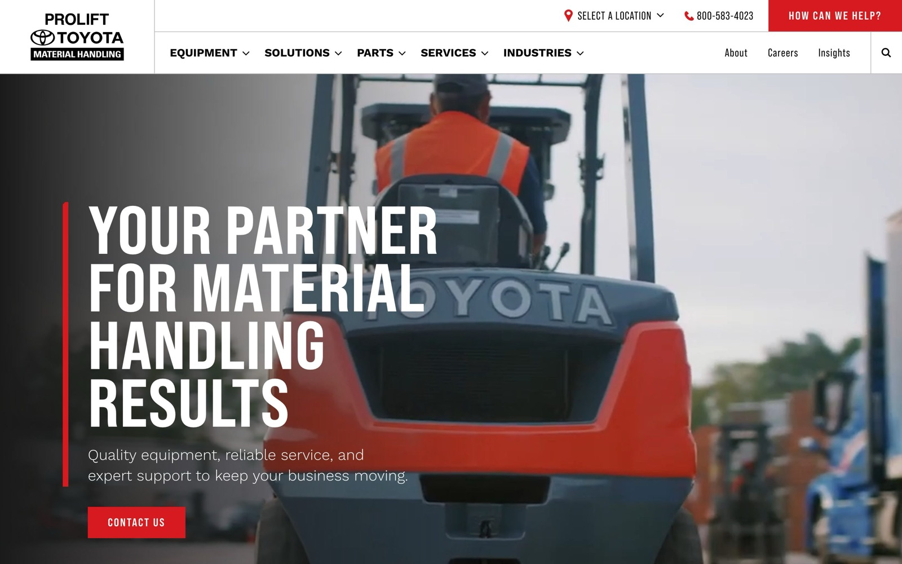
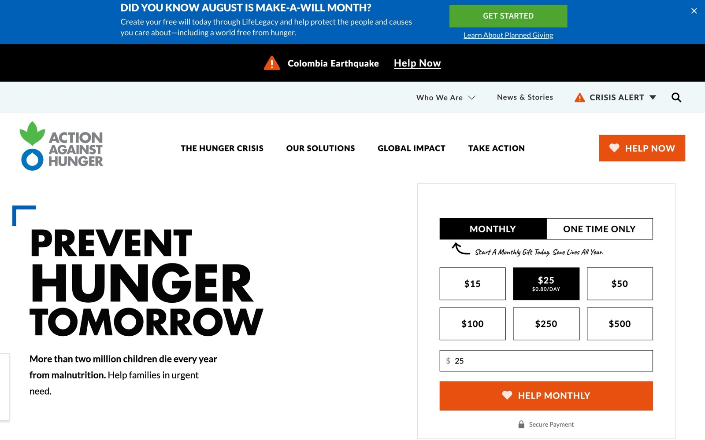
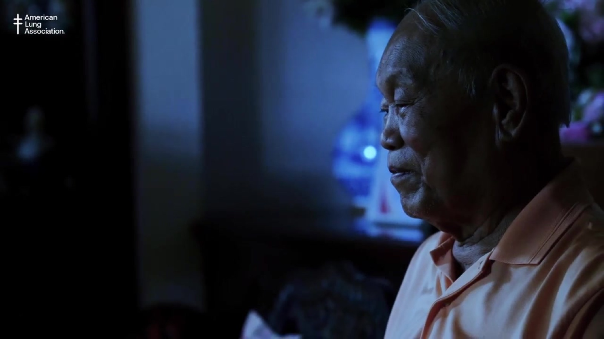

ProLift Toyota
A material-handling dealer with a catalog deep enough to get lost in — forklifts, aerial lifts, automation, parts, service — kept walkable.
Selected work

A material-handling dealer with a catalog deep enough to get lost in — forklifts, aerial lifts, automation, parts, service — kept walkable.

Explain a grim, complicated problem with authority and ask for money — without letting either job cheapen the other.
A daily companion for airline pilots: commutes, jumpseats, and federal duty-time limits, made calm at 5am in a crew room.

Connected-TV campaign work. Documentary, quiet, no hard sell.
Lab
Notes and experiments. Some of it is writing; some of it is a working thing embedded in a page. Both live here, because the work I care about most right now doesn't have screens to screenshot.
A personal Buzz hive so agents talk without me as the messenger — and the traps that made the playbook real.
No CMS, no database, no build step. Publishing a page and committing a file are the same action — and this entry proves it by reading its own history.
About
Most of my time now goes into an agentic design-to-code workflow — teaching AI systems to take a design system and turn it into shipped interface. It is the most interesting and most frustrating work I have done, and it is most of what I want to do.
It turns out that is a UX problem wearing different clothes. Designing an agentic system means deciding what it needs to know and when, where a person hands off intent, and what happens when it gets things wrong. That is interaction design. The substrate changed; the discipline did not. Eighteen years of untangling how people move through systems is the reason any of it works.
Before that: skateboard graphics, global agencies, and a long run helping nonprofits raise money and tell their stories online. Motion the whole way through — I will always love After Effects.
Off the clock I am on something with two wheels, usually going a little too fast.
Contact